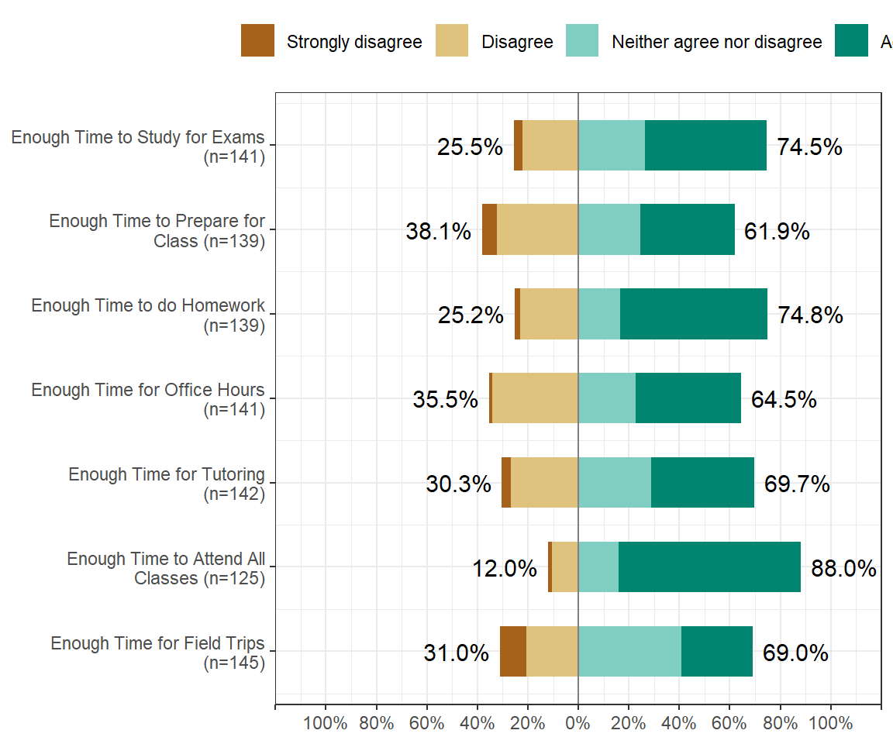
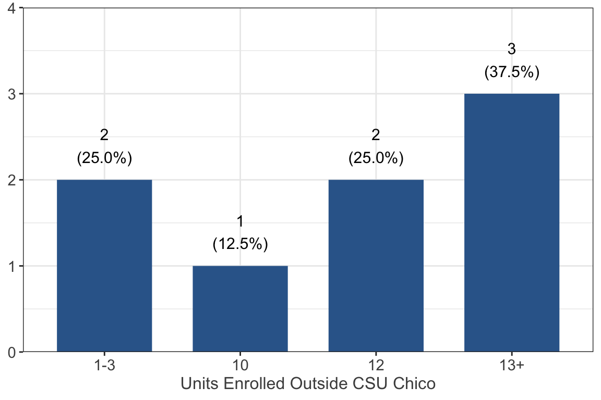

Student Status
Are you a first generation student?

The vast majority of respondents (94.7% n = 142) are first generation college students with only 8 (5.3%) not being first generation students.
What is your major at CSU, Chico?
| Major | Frequency |
|---|---|
| accounting | 2 |
| agriculture crop science | 1 |
| animal science | 2 |
| anthropology | 2 |
| anthropology - pre med | 1 |
| art studio | 1 |
| biochemistry | 1 |
| biology | 1 |
| business administration | 3 |
| business administration - finance | 1 |
| business administration human resource | 1 |
| business entrepreneurship | 1 |
| business information systems | 1 |
| business management | 2 |
| business- finance | 1 |
| cell molecular biology | 1 |
| chemistry | 1 |
| child development | 8 |
| child development and social work | 1 |
| civil engineering | 2 |
| cj | 1 |
| communication science and disorder | 1 |
| communication science and disorders | 1 |
| communication sciences and disorders | 1 |
| communication studies | 2 |
| computer animation and game development | 1 |
| concrete industry management | 1 |
| concrete industry management minor in business | 1 |
| construction management | 1 |
| construction management & concrete industry management | 1 |
| criminal justice | 12 |
| criminal justice and psychology | 1 |
| english education | 2 |
| exercise physiology | 4 |
| game developtment | 1 |
| graphic design | 1 |
| health education | 2 |
| health science | 3 |
| health science admin | 1 |
| health science administration | 1 |
| health science with an emphasis in health education | 1 |
| health science: education | 1 |
| health services administration | 1 |
| journalism- public relations | 1 |
| kinesiology (movement studies) | 1 |
| lbst/ comm. sciences and disorders | 1 |
| liberal studies | 4 |
| math education | 1 |
| mathematics - statistics | 1 |
| mechanical engineering | 1 |
| mechatronic engineering | 1 |
| microbiology | 1 |
| multicultural gender studies | 1 |
| nutrition and food science | 1 |
| nutritiona and food science | 1 |
| organizational communications | 1 |
| parks and rec | 1 |
| parks and recs | 1 |
| pre nursing | 1 |
| pre recording arts min;afam studies | 1 |
| pre-nursing | 1 |
| psychological sciences | 1 |
| psychology | 19 |
| psychology and child development | 1 |
| psychology and spanish | 1 |
| psychology/criminal justice | 1 |
| public admin | 1 |
| public health | 1 |
| public relations | 1 |
| pyschology | 1 |
| recording arts and music industry | 1 |
| recreational therapy | 1 |
| social work | 4 |
| sociology | 14 |
| spanish | 2 |
| studio art | 1 |
| undeclared or not decided | 3 |
What is your approximate overall Grade Point Average (GPA) for your current degree in progress? ⭐
About a third, or 34.0% (n = 51), of participants reported that their GPA is between 2.51 and 3.0, 32.0% (n = 48) reported that their GPA is between 3.01 and 3.5, and 20.0% (n = 30) reported that their GPA is between 2.01 and 2.5. 12.0% (n = 18) reported that their GPA is above 3.5 and lastly 2.0% (n = 3) reported that their GPA is between 1.51 and 2.0.
Units
How many units (rounded up) are you enrolled in for the current semester at CSU Chico?

More than half, or 53.7% (n = 80), of students filling out this survey are enrolled in 13-15 units in the semester of the survey, a quarter of the students (24.2% n = 36) are enrolled in 12 units, and 20.8% (n = 31) are enrolled in 16 or more units.
If currently enrolled at more than one college, how many units (rounded up) are you enrolled in for the current semester at other colleges (NOT CSU Chico)?

Out of the students who reported they are taking units outside of CSU Chico, about 37.5% (n = 3) are taking 13 or more units in a different college, 25.0% (n = 2) are taking either 1-3 units or 12 units respectively, and only 1 person (12.5%) is enrolled in 10 units outside of CSU Chico.
This work was supported by insert grant information here. Any use of these results in further work must use the following citation:
Center for Healthy Communities, "Website name", June 2020. Retrieved on xx-xxx-xxxx from https://chicocalfresh.github.io/bns-website/index.html